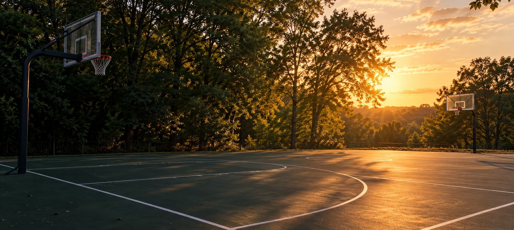

BELMONT TRACE PARK · BRAMBLETON, VIRGINIA
Baki's
Courts.
Visitor information for the outdoor basketball court at Belmont Trace Park: park access guidance, directions, and a real view of the court.
Independent visitor guide · Not operated by the Brambleton Community Association
BAKI'S COURTS WEBSITE CONTACT+1 (571) 295-2452
Court photo: Adael / Google Maps, March 2024 · View original ↗
PLAN YOUR VISIT
The essentials,
before you go.
Baki's Courts is the basketball court at Belmont Trace Park, a neighborhood park in Brambleton. The association lists an outdoor basketball court alongside a play field, volleyball court, gazebo, and playground.
Read the association's park pageWhen to visit
The park is open between dawn and dusk. These are the association's published park hours; court availability may vary.
Who can use it
According to the Brambleton Community Association, the park is for Brambleton owners, residents, and their guests.
Respect the neighbors
Use designated trails to reach the park. Please do not cut through residential lots.
Source: Brambleton Community Association. Check their page for current guidance.
COURT QUESTIONS
Good to know.
A quick, source-backed overview of the basketball court and the park around it.
What is Baki's Courts?
It is the outdoor basketball court at Belmont Trace Park in Brambleton, Virginia. The Brambleton Community Association lists the basketball court among the park's amenities.
Where is the court?
The court pin is on Franklin Benjamin Terrace, Brambleton, VA 20148. The association locates Belmont Trace Park along Connie Marie Terrace, near Belmont Ridge Road and south of Creighton Road. Check the map pin before traveling.
When is the park open?
The association publishes park access from dawn to dusk. This is park access guidance, not a reservation or a guarantee that the basketball court will be available.
Who may visit?
The association says Belmont Trace Park is for Brambleton owners, residents, and their guests. This independent guide does not grant access or change the association's rules.
Who do I contact?
For questions about this Baki's Courts website, call +1 (571) 295-2452. For park access, maintenance, or operations, contact the Brambleton Community Association.
COURT VIEWS
See it for yourself.
See a community photo of the court below, or browse the full Google Maps listing ↗.
 REAL GOOGLE MAPS PHOTO
02The court at dusk
Photo by Adael on Google Maps · March 2024 · Click for the original.
REAL GOOGLE MAPS PHOTO
02The court at dusk
Photo by Adael on Google Maps · March 2024 · Click for the original.

AI-generated scene · Not the actual courtFIND THE COURT
Meet you there.
The court pin is listed on Franklin Benjamin Terrace in Brambleton, VA 20148. The association describes Belmont Trace Park as being on either side of Connie Marie Terrace, just off Belmont Ridge Road and south of Creighton Road.
Brambleton, VA 20148